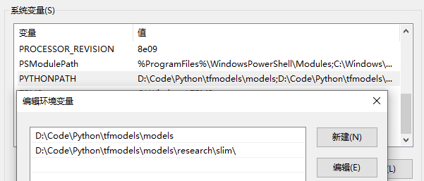
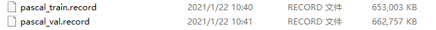
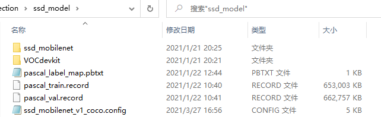
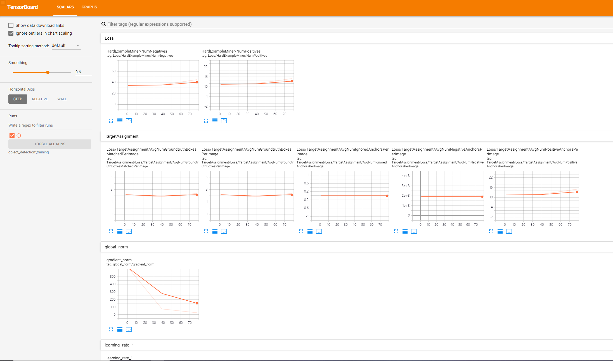
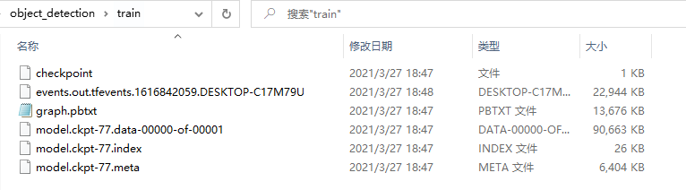

最近在做毕业设计嵌入式端的目标检测系统，看了前人写的论文大多数用的都是 MobileNet-SSD 模型，就去学习了一下。MobileNet v1 是 Google 2017年发表的用于移动和嵌入式视觉应用程序的高效模型，其核心思想就是提出了深度可分离卷积（Depthwise Separable Convolution）来代替标准卷积，同时引入两个全局超参数（宽度和分辨率）进一步缩小模型规模来构建更小、更快的移动网络。其后 v2 v3 版本（还没学）都是在 v1 基础上引入新技术不断缩小模型。
在树莓派 4B（Raspberry Pi OS、4GB、tensorflow 1.4）直接调用 TensorFlow object detection API 中的 ssd_mobilenet_v2_coco 预训练模型卡的起飞，大概只有0.8-0.9 FPS，毫无目标检测体验。想着把模型在 VOC2012 数据集上再次训练，下面是 MobileNet-SSD 模型训练过程。
下载
- Github 下载/克隆 tensorflow-models，后面的操作都要在这个目录下执行，建议创建 Python 虚拟环境
- 下载数据集 VOC2012，也可以使用 LabelImg 制作数据集训练自己的数据
- 下载 MobileNet-SSD 预训练模型，这里我下载的是 ssd_mobilenet_v1_coco
环境搭建
| 基本配置 | 版本 |
|---|---|
| CPU | Intel(R) Core(TM) i7-7500U CPU @ 2.70GHz 2.90 GHz |
| GPU | AMD Radeon(TM) 530 (没用) |
| RAM | 12 GB |
| OS | Windows 10 |
| Python | 3.7.9 |
| TensorFlow | 1.15.5 |
设置 PYTHONPATH
需要修改 PYTHONPATH 环境变量以指向刚下载的 tensorflow-models 内的某些目录，这里我把文件重命名为 models。
| 变量名 | 变量值（根据自己的路径修改） |
|---|---|
| PYTHONPATH | path\to\models;path\to\models\research\slim; |

安装 protobuf
这是一个轻便高效的序列化数据结构的协议，可以用于网络通信和数据存储的工具库（类似Json），但相比于Json，Protobuf 有更高的转化效率。Windows 下的安装很简单，只需到 github 上下载 protobuf 对应版本压缩包安装即可，如 protoc-3.15.6-win64.zip。
现在，使用 protoc 来编译目标检测 API 使用的协议 proto 文件来产生 py 文件。proto 文件放在 models\research\object_detection\protos\ 中，从 research/ 目录执行命令。
1 | # cd models/research/ |
这时 protos 文件夹下会生成相应的 py 文件。
安装 API
继续在research/目录下执行：
1 | python setup.py build |
配置和训练
在object_detection/目录下创建目录ssd_model，把下载好的 VOC2012 数据集解压进去，数据集路径为 models\research\object_detection\ssd_model\VOCdevkit\。执行以下命令将 VOC 数据集转换成 tfrecord 格式的数据。
1 | python ./object_detection/dataset_tools/create_pascal_tf_record.py --label_map_path=object_detection/data/pascal_label_map.pbtxt --data_dir=object_detection/ssd_model/VOCdevkit/ --year=VOC2012 --set=train --output_path=object_detection/ssd_model/pascal_train.record |
然后会在ssd_model/目录下生成pascal_train.record和pascal_val.record两个文件，分别有650M左右。

复制 object_detection\data\pascal_label_map.pbtxt 和object_detection\samples\configs\ssd_mobilenet_v1_coco.config到 ssd_model/ 目录下，接着把之前下载的ssd_mobilenet_v1_coco解压到ssd_model/ssd_mobilenet下。
1 | cp object_detection/data/pascal_label_map.pbtxt object_detection/ssd_model/ |
此时 ssd_model 下应有以下文件：

打开 pascal_label_map.pbtxt，这个文件里面是类似 Json 格式的 label 集，列出了数据集里有哪些label。Pascal VOC 这个数据集label共有20个。然后打开配置文件 ssd_mobilenet_v1_coco.config，把num_classes改为20
配置默认训练次数num_steps: 200000，根据自己需要改，注意这个训练是很慢的，差不多以天为单位，所以可以适当改小点。
然后根据自己文件路径修改一些文件路径：
1 | # 预训练模型 ckpt 文件的位置 |
在 object_detection\ 下新建文件夹 train 保存训练数据。完成之后，我们就可以训练了。
1 | # cd models/research/ |
训练可视化可以在 tensorboard 中查看训练情况，在浏览器中打开 http://localhost:6006/
1 | tensorboard --logdir=path/to/object_detection/train # 保存训练数据文件夹 |

经过漫长的等待，在/object_detection/train目录下生成了训练好的模型。（下图未训练完）

创建文件夹ssd_model/model导出训练好的模型，生成 pb 文件，再把 pascal_label_map.pbtxt 的内容改成txt作为 labe l文件，这个模型就可以使用了。
1 | python object_detection/export_inference_graph.py \ |
测试模型
1 | import numpy as np |
TFLite 模型转换
准备工作
TensorFlow Lite 是一组工具，可帮助开发者在移动设备、嵌入式设备和 IoT 设备上运行 TensorFlow 模型。包括两个主要组件：TensorFlow Lite 解释器和 TensorFlow Lite 转换器。
解释器可以在手机、嵌入式 Linux 设备和微控制器等很多不同类型的硬件上运行经过专门优化的模型（.tflite），转换器可将 TensorFlow 模型转换为方便解释器使用的格式，并可引入优化以减小二进制文件的大小和提高性能。下面详细讲下转换过程。
TensorFlow Lite 转换器提供两种转换方法：
- Python API：它让您可以更轻松地在模型开发流水线中转换模型、应用优化、添加元数据，并且拥有更多功能
- 命令行：它仅支持基本模型转换
将 SavedModel 转换为 TensorFlow Lite 模型，官方给提供了两种方式的实例代码
1 | import tensorflow as tf |
1 | tflite_convert \ |
示例代码中的 saved_model_dir 和 mobilenet_saved_model 路径一定要写对，正确的是上面训练好的模型 model/saved_model ，不要只写到 model ，否则会报下面错误。
OSError: SavedModel file does not exist at: object_detection/ssd_model/model/{saved_model.pbtxt|saved_model.pb}
当你开始转换，看着终端不断输出，然后它就又会报错了。
ValueError: None is only supported in the 1st dimension. Tensor ‘image_tensor’ has invalid shape ‘[None, None, None, 3]’.
开始转换
从我们上面训练好的模型转换成 tflite 只需要两步：
先把 model.ckpt 转成 pb 和 pbtxt 文件，用的是
object_detection/export_tflite_ssd_graph.py，可以参考 export_tflite_ssd_graph.py，下面是示例代码。1
2
3
4
5
6
7
8
9# cd models/research/
python object_detection/export_tflite_ssd_graph.py \
--pipeline_config_path path\to\ssd_model\model\pipeline.config \
--trained_checkpoint_prefix path\to\ssd_model\model\model.ckpt \
--output_directory path\to\ssd_model\model
# pipeline_config_path pipeline 配置文件位置
# trained_checkpoint_prefix ckpt 文件位置
# output_directory 导出 pb 文件位置此时在
ssd_model\model下会生成两个文件：tflite_graph.pb和tflite_graph.pbtxt接下来把 pb 转为 tflite 文件，官方给的示例代码总是报错原因就在这，我们少了第一步，直接转换了
saved_model.pb到tflite，同时也缺少模型转换参数，下面是示例代码。1
2
3
4
5
6
7
8
9
10
11tflite_convert \
--graph_def_file=path\to\ssd_model\model\tflite_graph.pb \
--output_file=path\to\ssd_model\model\ssd_mobilenet.tflite \
--input_arrays=normalized_input_image_tensor \
--output_arrays='TFLite_Detection_PostProcess','TFLite_Detection_PostProcess:1','TFLite_Detection_PostProcess:2','TFLite_Detection_PostProcess:3' \
--input_shape=1,300,300,3 \
--allow_custom_ops
# graph_def_file 第一步中 tflite_graph.pb路径
# output_file tflite 导出路径
# input_shape 1,x,x,1 根据配置文件修改至此我们完成了 tflite 模型转换。
可以在嵌入式、移动端部署了，下图是使用的 ssd_mobilenet_v1_coco.tflite 模型在树莓派部署效果图。推断时间大概在 400-500 ms，实时性不是很好，使用最新的 ssd_mobilenet_v3_small 速度大约提高了一倍，ssd_mobilenet_v3_large 推断时间比 v1 略高100ms，但是准确率有很大的提升，大厂的产品不得不服啊！

参考
[Tensorflow] 使用SSD-MobileNet训练模型